- Widget types
- The snippet
- Callbacks
- Code slideder
- Instance
- Customization addons
Index
Won
Reduced files loaded
- Pre build 23
- Build 7
- Widget v2 1
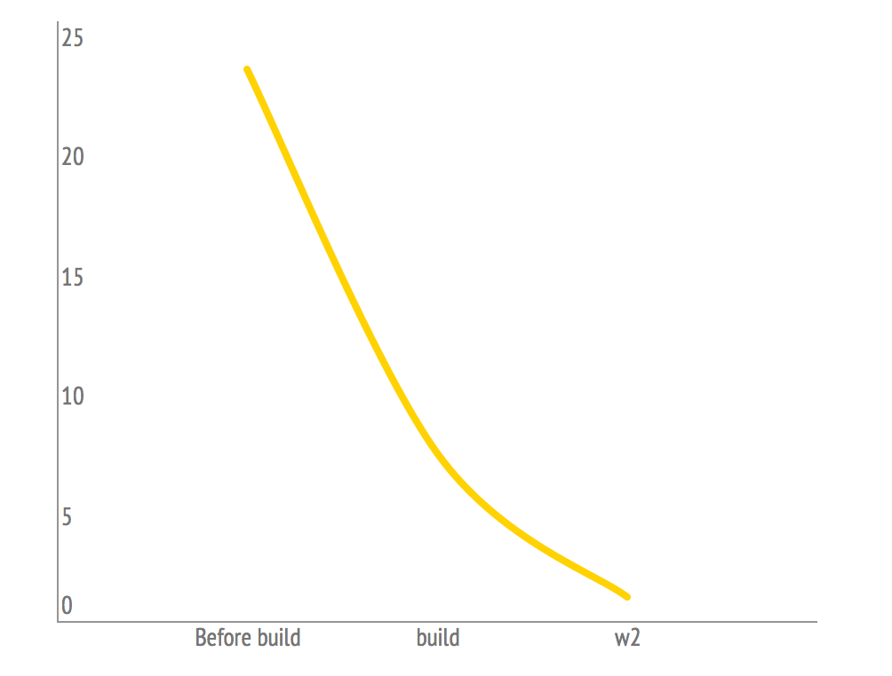
Less Size
- Before build 486
- Build 480
- widget v2 423
Loading time reduced
- Before build 4.305s
- Build 3.863s
- widget v2 3.863s
Another Features
- Using our (brand new) API Rest
- Now we don’t insert code in the client's HEAD
- Full template customization
- Widget instances
- More control for the Integration Team
- Clean code
- Unitest
- Code Coverage
- Improvemnet of events tracking
- Development mode (sandbox)
Widgets types
- 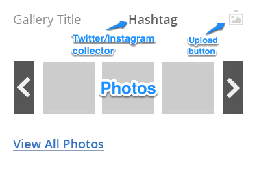
- 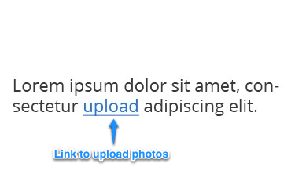
- 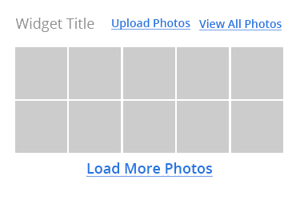
- 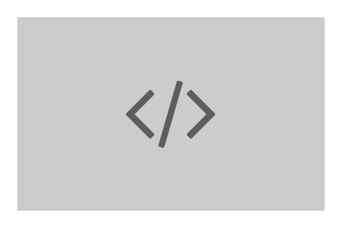
Removed:
- Description
- Upload button's text
- See all photos's text
- Photo resolution
- Stream name as call to action
- Call to action
- Thumbnail size
Importan to know:
- {{stream_link}}
- No pagination - yet
- Orientation classes:
.olapic_slide_horizontal&&.olapic_slide_vertical - Animation
- Class:
.olapic-carousel-list-animation - Pagination by page use:
.olapic-slider-wrapper
Removed:
- Description
- Title text
- Upload button's text
- Picture resolution
- Sorting: Isotope
- Open next page on a new window
- Scroll on window (no longer opcional)
Importan t0 know:
- Filters are independant from the instance's setting
- You can use both, streams and categories
- Including categories make more requests
- Very options wow

The snippet
Anatomy
<div id="WIDGET_WRAPPER_ID"></div>
<script type="text/javascript"
src="URL_TO_build.min.js"
data-olapic="WIDGET_WRAPPER_ID"
data-instance="blablabla_INSTANCE_HASH_blablabla"
data-apikey="blablabla_API_KEY_blablabla"
data-lang="blank|lang"
data-tags="aTAG|productId"
data-mode="blank|development"
></script>
//photorankstatics-a.akamaihd.net/blablaHASHblabla/static/frontend/latest/build.min.js
The script
<script type="text/javascript" src="URL_TO_build.min.js"></script>
<script type="text/javascript" >
function onOlapicLoad(){
OlapicSDK.conf.set('apikey', 'blablabla_API_KEY_blablabla');
window.olapic = window.olapic || new OlapicSDK.Olapic( function(o){
window.olapic = o;
renderWidget({'instance':'blablabla_INSTANCE_HASH_blablabla'});
});
}
function renderWidget(options){
var settings = {
wrapper: 'olapic_specific_widget',
// widget_id : parseInt( options.widgetId ),
id: options.instance,
stream_order : 'recent',
stream_type : '', //by_gallery|by_category|by_tag|by_tag_category
stream_type_href : '',
tags: '',
stream_page_limit : parseInt( options.count ),
lang: 'ES_ar'
};
window.olapic.prepareWidget(settings, { 'renderNow' : true, 'force':(options.force || false) });
}
</script>
The script
<script type="text/javascript" src="URL_TO_build.min.js"></script>
<script type="text/javascript" >
var wi = null;
function onOlapicLoad(){
...
}
function renderWidget(options){
var settings = {
wrapper: 'olapic_specific_widget',
// widget_id : parseInt( options.widgetId ),
id: options.instance,
stream_order : 'recent',
stream_type : '', //by_gallery|by_category|by_tag|by_tag_category
stream_type_href : '',
tags: '',
stream_page_limit : parseInt( options.count ),
lang: 'ES_ar'
};
window.olapic.prepareWidget(settings, { 'renderNow' : true, 'force':(options.force || false) }
, afterInstace : function(instance){
wi = instance;
} });
}
</script>
The script
<script type="text/javascript" src="URL_TO_build.min.js"></script>
<script type="text/javascript" >
function openViewer(){
wi.viewer.open({media:'//rest.local.photorank.me/media/463475147'})
}
function openUploader(){
wi.uploader.open()
}
</script>
Uploader: Methods
open : function(){
}
close : function(){
}
Viewer2v1: Methods
open: function(data){ // { media : mediaEndPoint }
}
close : function(){
}
move: function(direction){ //'next' or 'prev'
}
Callbacks
Widget - Wall
- olapicWallItemsInjected
- olapicWallAfterLoadPage
- olapicWallAfterLoad
- olapicWallBatchCompleted
- olapicWallMouseHover
- olapicWallMouseOut
- olapicWallStreamsList (TODO - not implemented yet)
- olapicWallInitSorting
Widget - Carousel
- olapicWallItemsInjected
- olapicSliderBeforeInitCarousel
- olapicSliderCarouselBeforePagination
Widget - Button
- olapicButtonAfterRender
- olapicSliderBeforeInitCarousel
- olapicSliderCarouselBeforePagination
UploaderV1
- olapicUploaderAfterRender
- olapicUploaderBeforeOpen
- olapicUploaderAfterClose
Viewer2v1
- olapicViewer2AfterRender
- olapicViewer2AfterShow
- olapicViewer2AfterClose
Callbacks
Templates: JS Callbacks
<script type="text/javascript" >
/*
use this template to refine the callbacks used on the widget
Uncomment the following lines:
var OlapicCallback = OlapicCallback || {};
OlapicCallback.olapicWallItemsInjected = function(w){
// place your code here
};
...
OlapicCallback.olapicWallStreamsList = function(w){
// place your code here
};
OlapicCallback.olapicWallInitSorting = function(w){
// place your code here
};
*/
</{{!}}script>
oQuery
oQuery.fn.oQuery
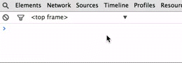
Packery
oPackery is the wall you can use it as any instance of Packery;
JS - reading params from the URL
How to read info from the url.
<script type="text/javascript">
function olapicGetParameterByName(name) {
name = name.replace(/[\[]/, "\\[").replace(/[\]]/, "\\]");
var regex = new RegExp("[\\?&]" + name + "=([^&#]*)"),
results = regex.exec(location.search);
return results == null ? "" : decodeURIComponent(results[1].replace(/\+/g, " "));
}
</script>
http://stage.ninashoes.com/bonique-black-luster-satin--17062?lang=ES_ar
<script type="text/javascript">
var theLang = olapicGetParameterByName('lang');
console.log(theLang);
</script>
JS - using
<script type="text/javascript" src="URL_TO_build.min.js"></script>
<script type="text/javascript" >
function onOlapicLoad(){
...
}
function renderWidget(options){
var settings = {
wrapper: 'olapic_specific_widget',
// widget_id : parseInt( options.widgetId ),
id: options.instance,
stream_order : 'recent',
stream_type : '', //by_gallery|by_category|by_tag|by_tag_category
stream_type_href : '',
tags: '',
stream_page_limit : parseInt( options.count ),
lang: olapicGetParameterByName('lang')||'ES_ar'
};
window.olapic.prepareWidget(settings, { 'renderNow' : true, 'force':(options.force || false) });
}
</script>
JS - Multiple instances
<script type="text/javascript" >
function onOlapicLoad(){
OlapicSDK.conf.set('apikey', 'blablabla_API_KEY_blablabla');
window.olapic = window.olapic || new OlapicSDK.Olapic( function(o){
window.olapic = o;
renderWidget({'instance':'blablabla_INSTANCE_HASH_blablabla'});
renderWidget({'instance':'blablabla_INSTANCE_HASH_blablabla_2'});
});
}
</script>
JS - Force the mode
<script type="text/javascript" >
function onOlapicLoad(){
OlapicSDK.conf.set('apikey', 'blablabla_API_KEY_blablabla');
OlapicSDK.conf.set('mode', 'development');
window.olapic = window.olapic || new OlapicSDK.Olapic( function(o){
...
});
}
</script>
What is an instance?
“A case or particular example”
Instances
- Its the unique representation of a widget
- It could be used in multiple pages/sites
- Once it’s implemented, the configuration is done from our end with no need to change the code on the client side.
How to create an instance
A widget is needed or you need to create a Widget in the Appareance Tab
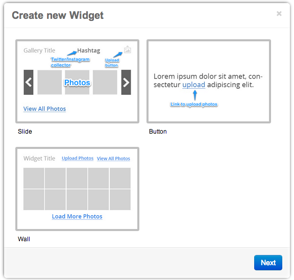
How to create an instance
On the widget Tab create new instance and name it
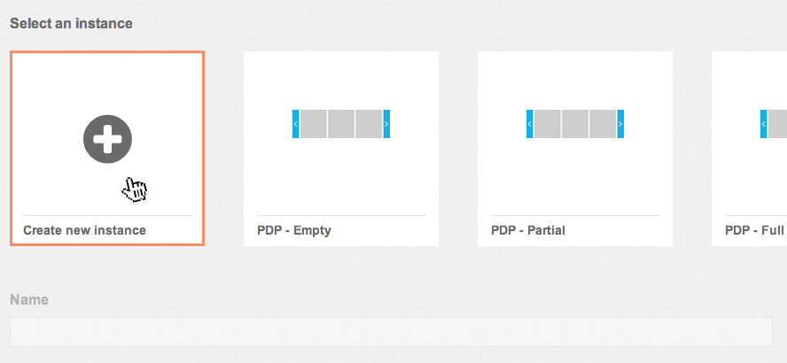How to create an instance
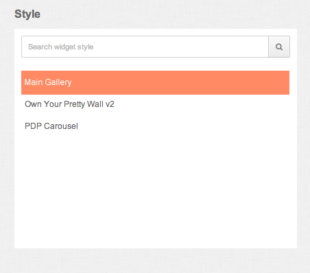
Select Style from created widgets
How to create an instance
Select Mode
Options:
- By Streams
- By Category
- Tag-based
&&
(name="photorank:tags" content="") - Tag-category
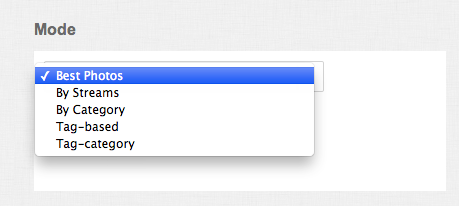
How to create an instance
Select Sorting Preferences
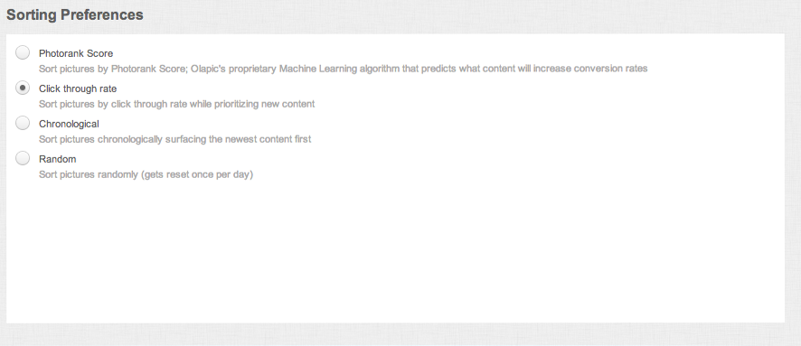How to create an instance
Advance Settings
When development Modes option is checked the olapicForceRender needs to be added to url in order to see the changes in sandbox.
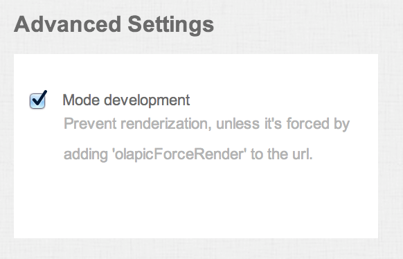
How to create an instance
Save it and grab the code displayed
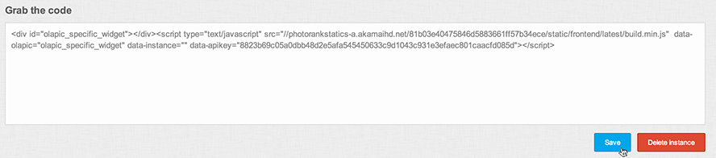Multilanguage Support
In order to show a widget on a specify language we have to hardcode the parameter on the snippet by adding (data-lang="SOMEDEFINEDLANG")
<id="olapic_specific_widget"></div>
<script type="text/javascript"
src="URL_TO_build.min.js"
data-olapic="olapic_specific_widget"
data-instance="blablabla_INSTANCE_HASH_blablabla"
data-apikey="blablabla_API_KEY_blablabla"
data-lang="fr_FR">
</script>
Customization addons in Viewer
Scroll by Page on Related Product's Items
<ul class="product-list" data-slide-width="[px to scroll]></ul>
Customization addons in Viewer
New class on Related Products wrapper
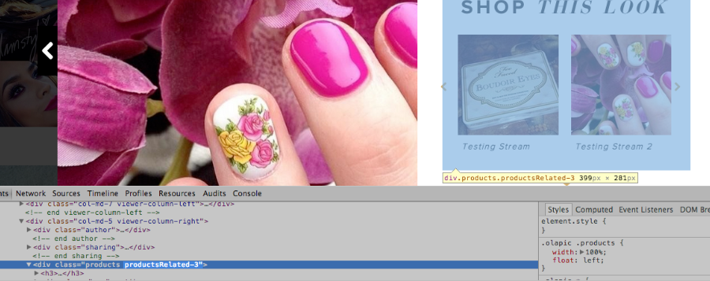
Customization addons In Slide
New class on Slide's wrapper
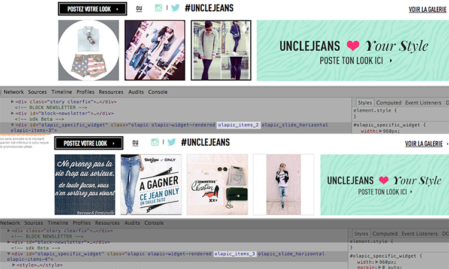
Customization addons In Slide
User name In Slider
<div> class="olapic-user-info" </div>
<span>Posted by
{{this._embedded.uploader.username}}
</span>
</div>
Customization addons In Uploader
New Modal tpl
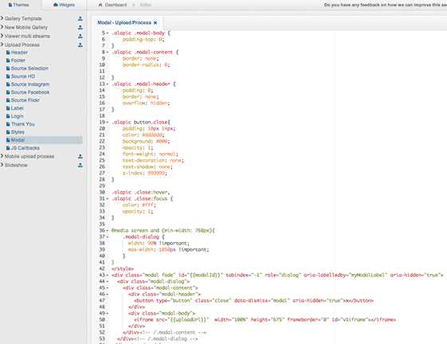
Customization addons In Uploader
Uploader Sources markup
The new structure gives the flexibility to order, change or even remove the souce's options. The new code for Source Selection is as follows:
<div>class="upload-sources-splash">
<ul>
<li>
<a class="olapic_base_bt_harddrive base-btn olapic-icon-harddrive"
rel="harddrive" href="{$siteUrl}/uploader/{$owner->user_dir}/upload/
harddrive?gallery={$galleryId}&customer_id={$customerId}&
context={$context}&widget_config={$widget_config}&lang={$lang}">
Computer
</a>
</li>
......
</ul>
...
</div>
Ok, what's now
- Document all the things!
- Implement (finish) custom widget
- Spooning (with the Integration Team)
- Update the uploader's template
- Test on the addons (Integration testing)
and yew, we're turing Emilio into Argentiean